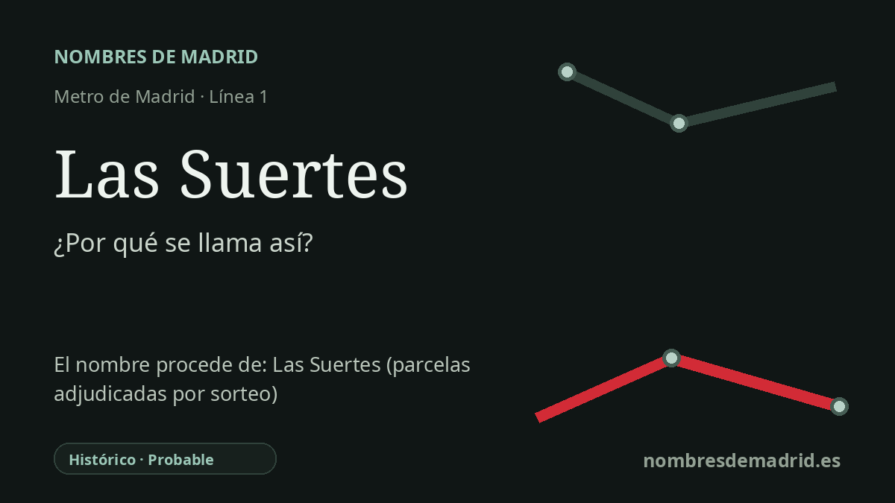

Publicado el · Investigación de Nombres de Madrid · Cómo verificamos cada origen · 6 fuentes consultadas
Respuesta rápida
Las Suertes probablemente toma su nombre de la avenida de Las Suertes, denominada oficialmente en el Ensanche de Vallecas en 2006. La palabra suerte puede significar una porción de tierra de labor delimitada, por lo que el nombre conserva probablemente un topónimo rural de parcelas en una zona urbanizada en los años 2000.
La historia del nombre
Las Suertes es una de las tres estaciones de la línea 1 creadas para la nueva prolongación al Ensanche de Vallecas, abierta al público el 16 de mayo de 2007. El nombre de la estación remite a su entorno inmediato: la avenida de Las Suertes fue denominada oficialmente por el Ayuntamiento de Madrid en un boletín publicado el 3 de agosto de 2006, menos de un año antes de la entrada en servicio del Metro.
La clave del nombre está en el antiguo uso agrario de la palabra suerte. La Real Academia Española recoge suerte como una parte de tierra de labor separada de otras por sus lindes. En muchos paisajes españoles, nombres como Las Suertes pueden aludir por tanto a campos divididos, lotes o parcelas cuyos límites eran importantes para el cultivo, la propiedad, la fiscalidad o los repartos.
En Vallecas, esa interpretación encaja con la geografía histórica, pero conviene formularla con prudencia. El Ensanche de Vallecas se planificó como una gran expansión urbana del sureste, con unas 26.000 viviendas, sobre terrenos que durante mucho tiempo estuvieron en el borde entre el antiguo núcleo, los campos, los caminos y las infraestructuras metropolitanas posteriores. Una asociación vecinal señala además que nombres como de las Suertes pertenecían a la toponimia vallecano de siempre, aunque no se ha consultado un documento de archivo que vincule este nombre concreto con un reparto o una parcela catastral específica.
La cronología del transporte está mejor documentada. La Comunidad de Madrid describe el proyecto Congosto-Ensanche de Vallecas como una prolongación de 3,1 km para servir a una nueva gran zona residencial; la prensa de la época informó de la apertura de La Gavia, Las Suertes y Valdecarros el 16 de mayo de 2007. El expediente municipal de denominación viaria muestra que la avenida de Las Suertes sustituyó a la etiqueta provisional 'Ensanche de Vallecas número 10.'
Por tanto, la explicación pública más segura es que la estación toma el nombre de la avenida y del topónimo local Las Suertes, probablemente relacionado con antiguas parcelas rurales. El origen léxico está bien apoyado, y las fechas de la avenida y del Metro están documentadas. Lo que sigue siendo probable, no plenamente verificado, es el último enlace histórico: un documento explícito que diga que este topónimo vallecano nació de suertes agrícolas y no solo que conserva una palabra heredada del territorio.